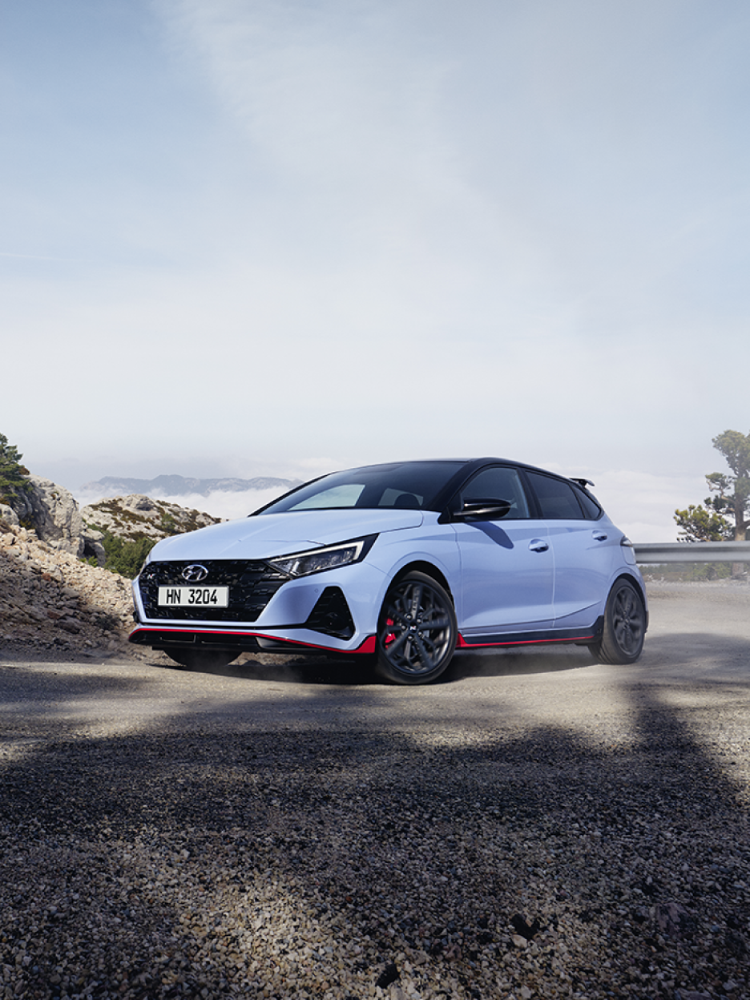
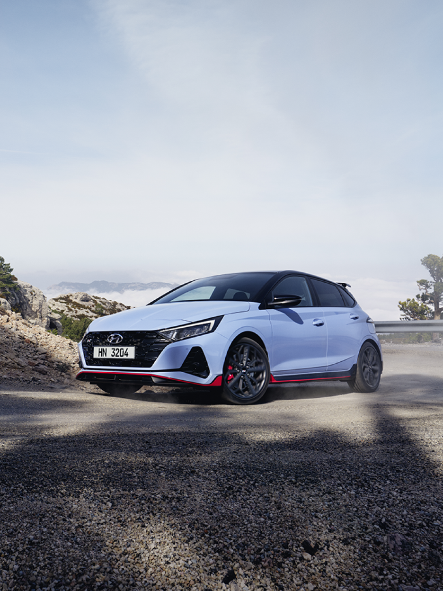
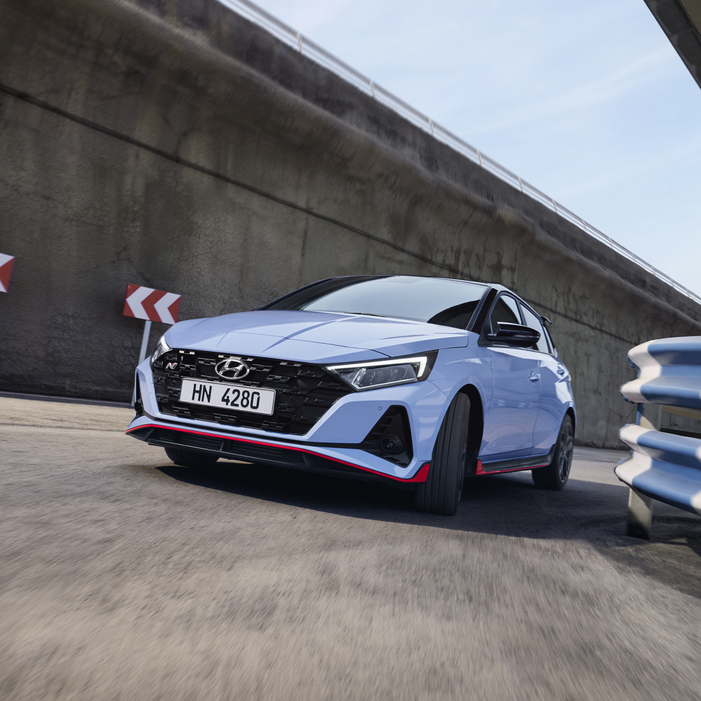
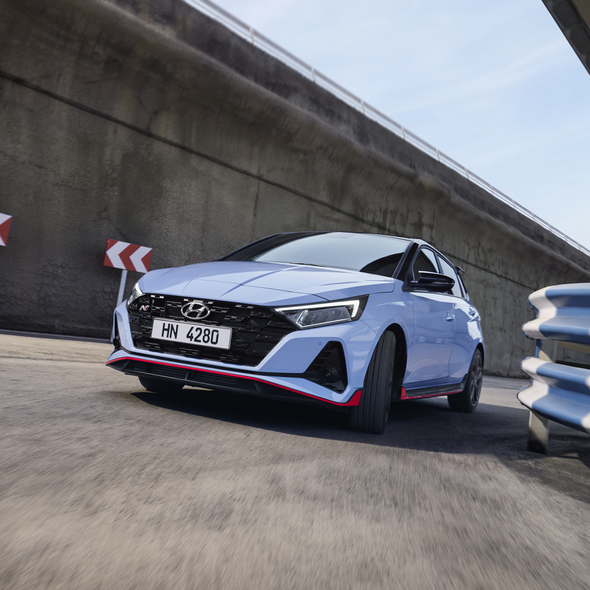
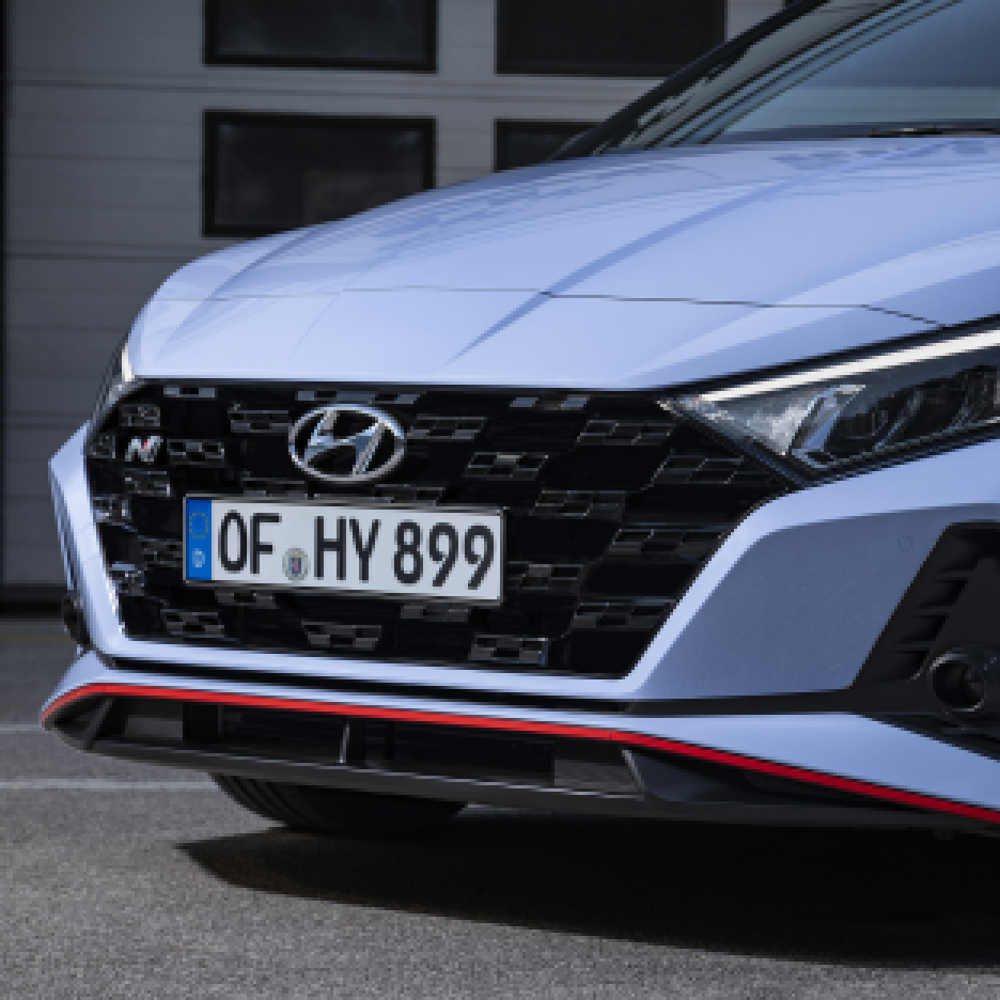
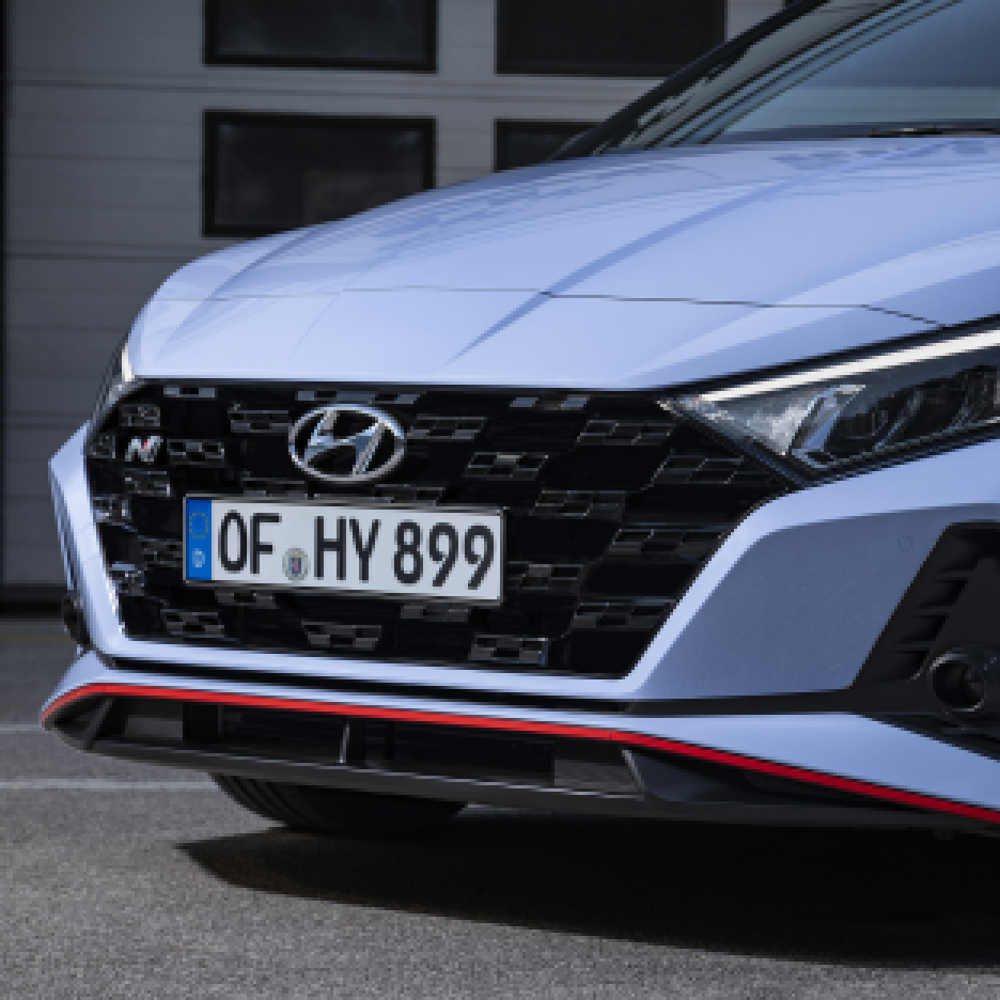
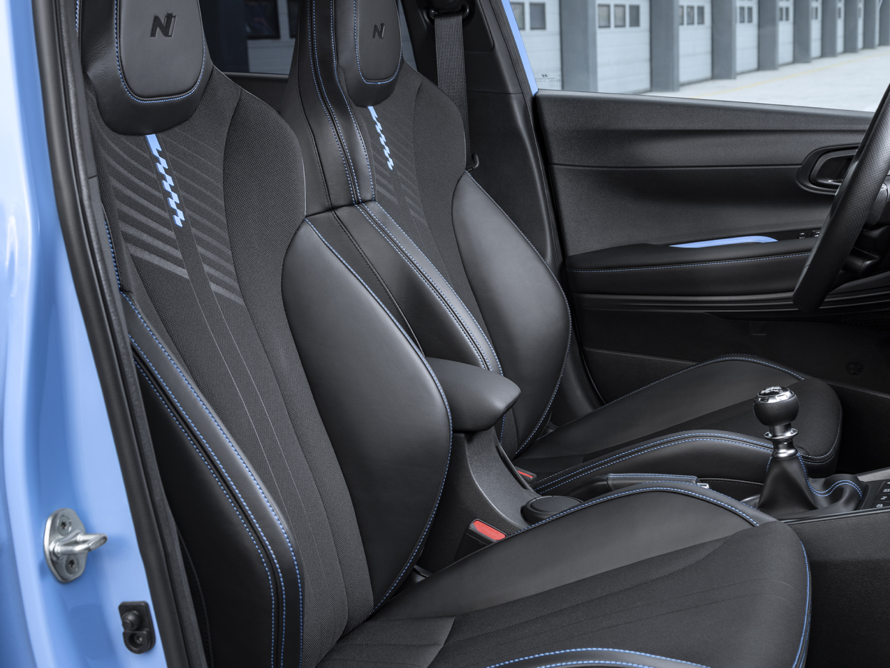
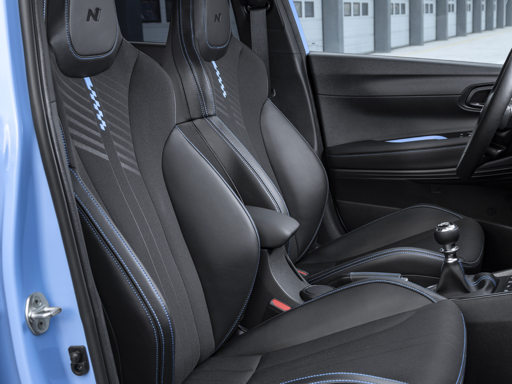
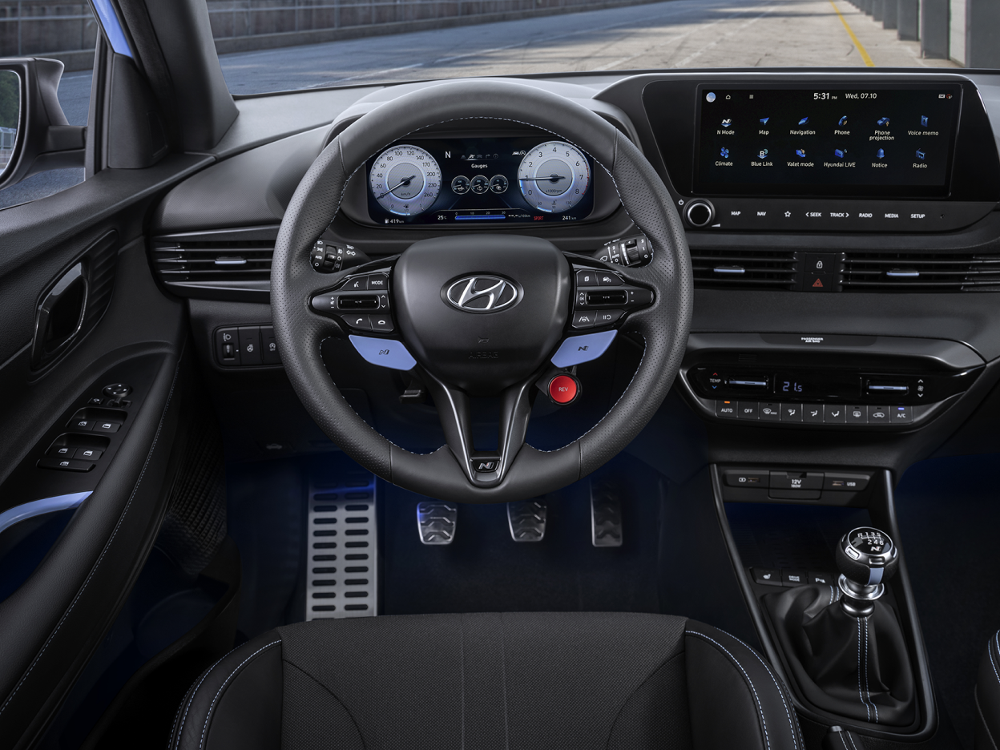
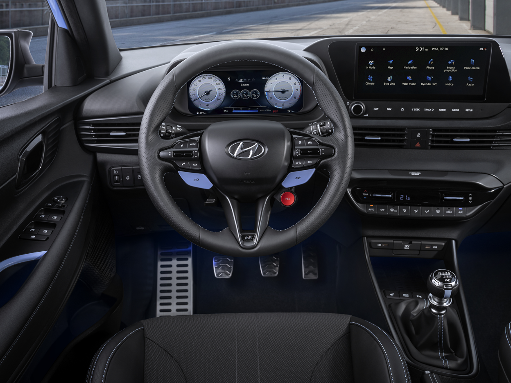

올 뉴 i20 N
오직 스릴 넘치는 드라이브를 위해


Overview
나만을 위한 스테이지
질주의 쾌감은 선택된 자들만의 것이 아닙니다. 드라이버라면
누구나 모든 순간을 만끽할 수 있어야 합니다.
동급 최고의
i20을 기반으로, 신호등이 녹색 불로 바뀌기 직전, 가속 페달을
밟으면 “나만을 위한 스테이지”가 펼쳐집니다.


Performance
도로 위의 랠리카
올 뉴 i20 N은 i20 WRC의 우월한 DNA가 직접 계승된 모델로, 일상 속 주행에서 모터스포츠만의 레이스 트랙 성능을 보장합니다. 작지만 빠른 이 모델은 1,190kg의 가벼운 차체와 견고함을 갖춰 강력하고 민첩한 움직임을 선보입니다. 이 모델과 함께라면 어느 곳이든 나만의 랠리 스테이지로 변화시킵니다.


204pspower
28.0kgf-mMax. torque
6.7sec0-100km/h
작지만 강력한 퍼포먼스
i20 N은 1.6리터 터보차저 GDi 엔진과 6단 수동변속기(6MT)를 탑재해 최고 출력 204ps를 자랑합니다. i20 쿠페 WRC와 동일한 중량으로 중량 대비 출력비는 동급 최고에 속합니다. i20 N은 최고 속도 230km/h을 자랑하며 단 6.7초 만에 0km/h에서 100km/h까지 도달할 수 있습니다.


 

모두가 즐기는 고카트의 역동성
전면의 N 파워 센스 액슬과 후면의 이중 결합 토션빔 액슬(CTBA)은 향상된 승차감과 핸들링 퍼포먼스를 위해 더 높은 강성을 제공합니다. 스티어링 기어비가 12.0으로 낮아진(i20: 12.4) 올 뉴 i20 N은 자신감 있고 스포티한 주행을 위해 정밀한 다이렉트 스티어링을 제공합니다. 이러한 N DNA 주행 역동성은 고카트만의 민첩성을 구현합니다.
 

모든 코너를 압도
올 뉴 i20 N에는 기계식으로 제어되는 토션 기어 타입을 활용해 전륜에 동력을 효율적으로 전달하는 기계식 차동 제한 장치(m-LSD)인 N 코너 카빙 디퍼렌셜이 탑재되어 있습니다. 모든 코너에서 최적의 견인력을 제공하고 그립력을 향상시켜 보다 스포티하고 민첩하게 주행할 수 있습니다.
고성능 브레이크 시스템
고성능 브레이크에는 기본 모델보다 40mm 더 넓은 전면 디스크를 사용하여 페이딩 저항성을 높이고 브레이크 페달에서 일관된 감각을 제공하며 내열성을 극대화합니다. 왼발 제동 보정과 N 2단계 PWI(브레이크 패드 마모 표시기)는 안전한 트랙 주행의 즐거움을 보장합니다.


Design
양보할 수 없는 외형 디자인
올 뉴 i20 N은 운전자들을 감각적인 디자인으로 끌어당기고, WRC에서 영감을 받은 고성능 경험을 제공합니다. 외형 디자인은 현대차의 랠리 헤리티지와 센슈어스 스포티니스(Sensuous Sportiness)의 최신 디자인 아이덴티티를 통합하여 고성능 특성을 강조합니다. 이중 레이어 스포일러, 덕트 에어 가이드 및 프론트 스플리터는 항력과 양력을 최소화하여 공기역학을 향상합니다.
 

전면
체크 무늬 깃발 패턴의 라디에이터 그릴


측면
레드 컬러로 포인트를 준 사이드 스커트


후면
레드 컬러 포인트
성능을 보완하는 인테리어
올 뉴 i20 N의 인테리어는 역동적 주행 경험을 보완하는 드라이빙 공간을 제공합니다. 머리 받침대가 통합된 N 전용 스포츠 시트, N 스티어링 휠, N 기어 노브, 스포티한 N 금속 페달 등, N만의 모든 요소가 하나 하나의 경험을 구성합니다. 상징적인 레브 매칭 레드 버튼은 특별한 감성을 선사하는 N 감각을 완성합니다.
 

열선 스티어링 휠
추운 날에도 손의 온기를 유지하세요. 그립감이 뛰어난 N 스티어링 휠은 손에 쉽게 닿는 제어 장치를 통해 따뜻함을 유지할 수 있습니다.
 

지지력이 뛰어난 스포츠 시트
통합형 머리 받침대, 가죽 포인트 및 블루 컬러 스티치가 사용된 전용 스포츠 시트에 전문 레이서가 된 것처럼 앉아보세요. 이 시트는 장거리 운전에 도움이 될뿐만 아니라 추운 날 난방도 가능합니다.
Technology
종합적인 안전 패키지
i20 N에는 현대 스마트 센스가 포함된 첨단 운전자 보조 시스템 기능이 탑재되었습니다. 여기에는 시내/도시 간/보행자 전방 충돌방지 보조(FCA), 지능형 속도제한 보조(ISLA), 차선 유지 보조(LFA), 후측방 충돌 경고(BCW) 등의 기능이 포함됩니다.
전방 충돌 방지 보조(FCA) 자전거 타는 사람 감지 기능 탑재
FCA 시스템은 레이더 및 카메라를 통해 전방 도로를 감지하여 앞차나 보행자, 자전거의 급제동을 감지하면 자동으로 제동합니다.
지능형 속도제한 보조(ISLA)
속도 제한을 초과하면 오디오 및 시각적 신호가 표시됩니다. ISLA는 수동 속도 제한 장치와 결합되어 차량 속도를 자동으로 조정합니다.
차선 유지 보조(LFA)
올 뉴 i20 N에는 차선 유지 보조(LFA) 기능이 포함되어 있습니다. 차선 유지 보조 기능을 활성화하면 고속 도로와 시내 도로에서 0~180km/h의 속도로 차량을 차선 중앙에 유지합니다.
후측방 충돌 경고(BCW)
BCW 시스템은 리어 범퍼의 레이더 센서를 사용하여 드라이버의 사각지대에 접근하는 차량을 감지하고 경고합니다.
Specification
i20 N 제원

- 엔진
- 1.6 GDi
- 변속기
- 6 MT
- 출력 (PS)
- 204
- 최대 토크 (kgfm)
- 28.0
- 최고 속도 (km/h)
- 230
고성능 여름용 타이어는 주변 온도가 7°C 미만인 경우 적당한
소음을 유발할 수 있습니다.
저온 조건에서 최적의 성능을 발휘하려면 겨울용 타이어를
권장합니다.


Related

The all-new IONIQ 5 N

IONIQ 5 N 2024 World Performance Car Award Winner

Mastering Japanese tracks, one drift at